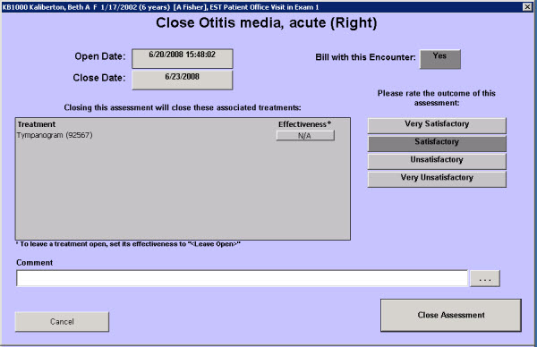

|
Description
This screen is used to close a resolved assessment and document information about the outcome and efficacy of the treatment plan.
When an assessment is selected to be closed, the close assessment (name) screen appears. All associated treatments will be closed automatically. This screen gives the provider the option of keeping individual treatments open, if needed.
 NOTE: It is important that resolved assessments are closed in a timely manner. This keeps the Patient Chart up to date and 'clean looking.' Additionally, if the assessment is an acute illness encounterPRO keeps track of the number of times a particular assessment has been ordered. The Assessment History display and report will show each time the assessment was ordered and the treatment plan for that instance. NOTE: It is important that resolved assessments are closed in a timely manner. This keeps the Patient Chart up to date and 'clean looking.' Additionally, if the assessment is an acute illness encounterPRO keeps track of the number of times a particular assessment has been ordered. The Assessment History display and report will show each time the assessment was ordered and the treatment plan for that instance.
Screen Example

Want to Learn More?
Related Solutions
Concept: Closing vs. Canceling
Screen: Re-diagnose Assessment
How to: Close Assessments and Treatments
How to: Review Closed Assessments, Treatments, and Histories
|